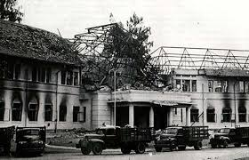
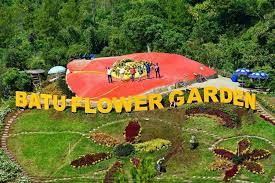

KOTA MALANG

Kota Malang merupakan salah satu kota tujuan wisata di dan kota terbesar kedua di Jawa Timur setelah Surabaya. Kota
Malang dikenal dengan julukan kota pelajar, atau banyak juga yang menjuluki sebagai kota bunga. Potensi alam yang
dimiliki Kota Malang yaitu letaknya yang cukup tinggi berada di 440-667 mdpl.
PENINGGALAN DAN SITUS BERSEJARAH
Karena sudah dihuni sejak zaman prasejarah, telah ditemukan berbagai peninggalan masa prasejarah di Malang. Di
Bakalankrajan, rakyat menemukan lumpang dan dolmen. Selain itu, ditemukan pula lumpang dan batu gores di Tlogomas
yang kini berada di Museum Mpu Purwa.Selain itu, peninggalan masa Kerajaan Hindu-Buddha pun tidak kalah. Telah
ditemukan tempat pemujaan Hindu sekte Siwa pada masa Singhasari atau Majapahit di McDonald's yang dinamai Situs
Ketawanggede.
Peninggalan yang paling terkenal ialah peninggalan masa Belanda. Ada peninggalan seperti lukisan keramik di Hotel
Pelangi, bangunan warisan Belanda di kawasan Jalan Ijen, dan bangunan kuno dengan arsitektur menawan. Kawasan Jalan
Ijen tersebut merupakan salah satu peninggalan dari arsitek Herman Thomas Karsten. Belanda pun meniggalkan beberapa
utilitas seperti saluran drainase. Peninggalan kecil seperti uang-uang Belanda kuno pun sempat dipamerkan pada tahun
2013. Info selengkapnya klik disini.
KULINER
Kota Malang merupakan kota kuliner.
terutama kuliner dengan harga terjangkau. Banyaknya kuliner berharga murah disebabkan oleh penduduk Kota Malang yang
sebagian besar merupakan pelajar dan mahasiswa dari seluruh Indonesia. Hidangan khas Malang, Jawa, Indonesia, hingga
Eropa ada di Malang karena Malang merupakan kota multikultural. Dalam perihal makanan, Kota Malang juga dikenal
memiliki banyak warung yang cukup legendaris dan telah bertahan lama hingga puluhan tahun.
Toko tersebut, antara lain Toko Oen yang berdiri sejak 1930 Warung Tahu Telur Lonceng yang berdiri pada awal
1900-an hingga disebut sebagai makanan zaman kolonial hingga milenial dan Gerai Putu Lanang Celaket yang berdiri
sejak 1935.
Wisata kuliner di kota pun dicampuradukkan dengan Festival Malang Tempo Doeloe. Dalam festival tersebut, dijuallah
berbagai sajian kuliner zaman dahulu, mulai dari cenil, putu, sampai grendul. Jajanan zaman dahulu seperti tebu,
gulali, dan kerupuk miller pun dijual pada festival tahun 2012. Gulali yang dijual bukan main-main karena gulali
tersebut berupa gulali cetak sehingga bisa dibentuk-bentuk sebperti jagung, naga, ataupun bunga.
JUMLAH RUMAH MAKAN MENURUT KECAMATAN DI KOTA MALANG
Berikut tabel jumlah rumah makan di Kota Malang:
| Kecamatan |
Jumlah rumah makan per-tahunnya |
| 2018 |
2019 |
2020 |
| Kedungkandang |
97 |
97 |
157 |
| Sukun |
134 |
134 |
189 |
| Klojen |
686 |
686 |
908 |
Wisata Kota Malang Yang Cocok Dikunjungi
Wisata Kota Malang memang selalu menarik untuk dikunjungi. Banyak tempat wisata Kota Malang yang bisa jadi pilihan saat hari libur. Selain wisata alam yang masih asri, Kota Malang juga memiliki berbagai destinasi wisata lain yang
patut untuk dikunjungi.
Kota Malang dikenal sebagai daerah yang sejuk dan dingin.
Hal ini yang kemudian membuat para wisatawan betah, bahkan ingin mengunjunginya berkali-kali. Ada banyak wisata Kota Malang yang seru dan edukatif.
Selain itu, wisata Kota Malang juga menawarkan panorama yang indah dan menakjubkan.
Malang Night Paradise tempat ini bisa jadi pilihan wisata di malam hari dan bisa dinikmati bersama keluarga. Banyak sekali lampu taman yang menawarkan keindahan pada waktu malam hari.

BATU FLOWER GARDEN
Selain bisa berkunjung ke Florawisata San Terra de Lafonte, para pencinta bunga bisa juga mampir ke Batu Flower Garden.
Tempat ini dibangun di kawasan lereng Gunung Panderman di atas ketinggian 1.000 sampai 1.200 meter di atas permukaan laut (mdpl), sekaligus berada di atas lahan Perhutani.
Banyak tempat Instagramable bisa dikunjungi, mulai dari spot foto di atas bukit hingga Air Terjun Coban Rais. Ada juga tempat untuk berkemah.
Lokasinya ada di Oro-Oro Ombo, Kecamatan Batu, Kota Batu. Bisa dikunjungi mulai pukul 08.00 WIB hingga 16.00 WIB setiap harinya.